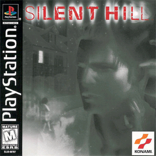
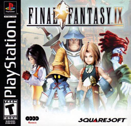
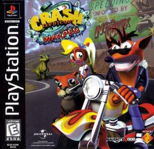
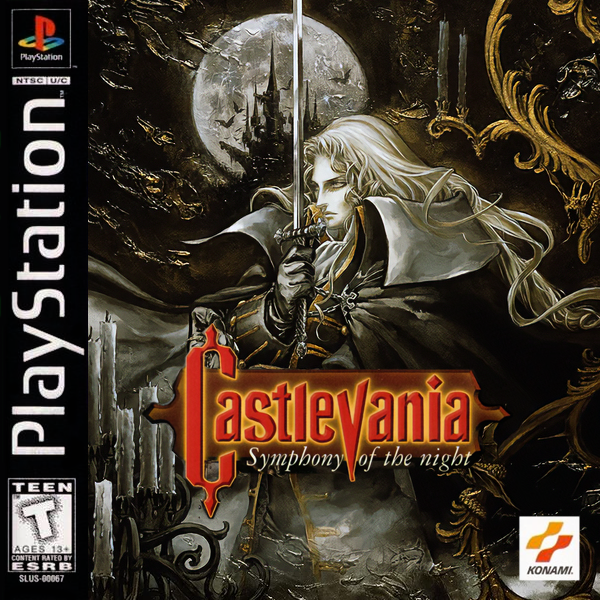
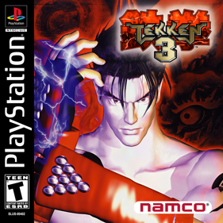
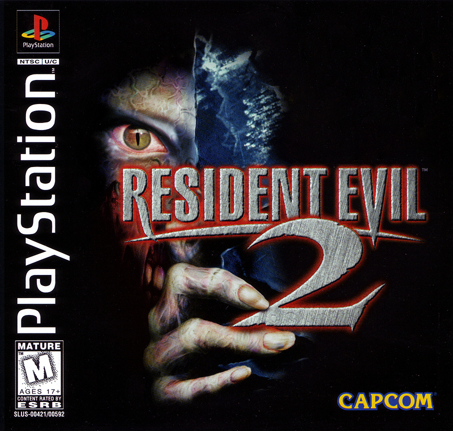
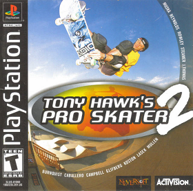
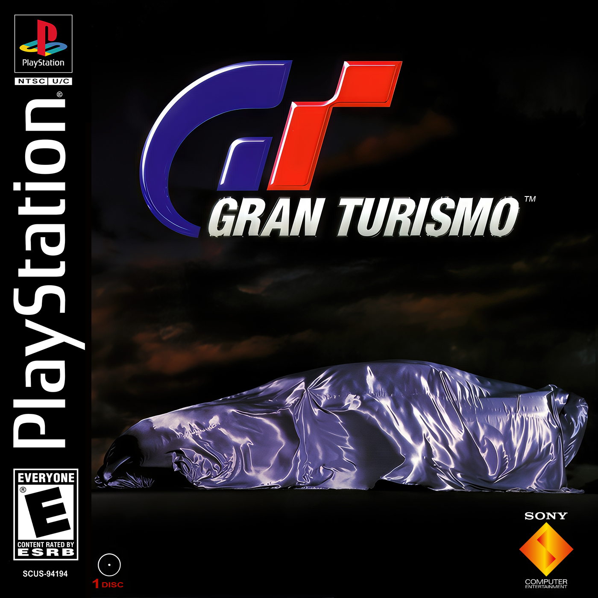
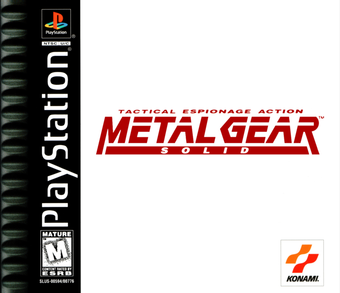

TOP 10 MUNDIAL
PLAYSTATION
Los 10 mejores juegos de la consola que le gano la generacion a Nintendo
CONTEXTO
LA CONSOLA QUE CAMBIO TODO
Sony entro tarde al mercado de consolas en 1994, sin experiencia previa en el rubro -y termino ganandole la generacion entera a Nintendo. El CD-ROM en vez de cartucho le dio espacio para FMV, audio CD y juegos que antes no cabian en ningun lado. Hoy: los 10 mejores de su catalogo.
#10
TOP

PS1
TARROVISIONCH 10
NO SIGNAL
Inserta gameplay aqui
Silent Hill
PS1 · 1999 · KONAMI (TEAM SILENT)
▶ POR QUELa niebla que se volvio el sello de toda la saga nacio como parche tecnico -el PS1 no podia renderizar la ciudad completa sin popping, y Konami tapo el horizonte con niebla. Termino siendo el elemento mas aterrador del juego.
#9
TOP

PS1
TARROVISIONCH 09
NO SIGNAL
Inserta gameplay aqui
Final Fantasy IX
PS1 · 2000 · SQUARE
▶ POR QUEProyecto personal de Hironobu Sakaguchi, creador de la saga -un regreso deliberado a la fantasia medieval clasica despues del giro futurista de FFVII y FFVIII. Fue el ultimo Final Fantasy numerado en PS1 antes de que la saga saltara a PS2.
#8
TOP

PS1
TARROVISIONCH 08
NO SIGNAL
Inserta gameplay aqui
Crash Bandicoot: Warped
PS1 · 1998 · NAUGHTY DOG / SONY
▶ POR QUENaughty Dog tuvo solo 10 meses y medio para hacerlo, con un presupuesto de 2 millones de dolares -y aun asi vendio mas de 5.7 millones de copias. La entrega mas ambiciosa de la trilogia original: vehiculos, viajes en el tiempo, mas variedad de niveles que las dos anteriores juntas.
#7
TOP

PS1
TARROVISIONCH 07
NO SIGNAL
Inserta gameplay aqui
Castlevania: Symphony of the Night
PS1 · 1997 · KONAMI
▶ POR QUEVendio mal al lanzarse -en plena transicion de la industria a los graficos 3D, un juego 2D se veia 'anticuado' para la critica de la epoca. Se convirtio en exito de culto por el boca a boca, y hoy aparece constantemente en listas de los mejores juegos de la historia.
#6
TOP

PS1
TARROVISIONCH 06
NO SIGNAL
Inserta gameplay aqui
Tekken 3
PS1 · 1997 (Arcade) / 1998 (PS1) · NAMCO
▶ POR QUEConvertido del arcade (Namco System 12, basado en hardware de PS1) casi sin perdidas de calidad -vendio 8.36 millones de copias, el segundo fighting game mas vendido de la historia despues de Super Smash Bros. Brawl.
#5
TOP

PS1
TARROVISIONCH 05
NO SIGNAL
Inserta gameplay aqui
Resident Evil 2
PS1 · 1998 · CAPCOM
▶ POR QUERompio records de venta el mismo fin de semana de su lanzamiento -380 mil copias y 19 millones de dolares en 3 dias, superando el record que habia puesto Final Fantasy VII el año anterior.
#4
TOP

PS1
TARROVISIONCH 04
NO SIGNAL
Inserta gameplay aqui
Tony Hawk's Pro Skater 2
PS1 · 2000 · NEVERSOFT / ACTIVISION
▶ POR QUEMetacritic 98 -el segundo mejor puntuado de toda la historia de los videojuegos en su momento, segun el propio Metacritic. Activision confirmo la compra de Neversoft literalmente mientras el juego estaba en desarrollo.
#3
PODIO

PS1
TARROVISIONCH 03
NO SIGNAL
Inserta gameplay aqui
Gran Turismo
PS1 · 1997 (Japon) / 1998 (occidente) · POLYS ENTERTAINMENT / SONY
▶ POR QUEKazunori Yamauchi tardo 5 años en hacerlo con un equipo que crecio de 5 a 17 personas -se convirtio en el juego mas vendido de toda la historia de PS1, con 10.85 millones de copias.
#2
PODIO

PS1
TARROVISIONCH 02
NO SIGNAL
Inserta gameplay aqui
Metal Gear Solid
PS1 · 1998 · KONAMI
▶ POR QUEHideo Kojima lo mostro en el Tokyo Game Show de 1996 y en el E3 de 1997, pero el lanzamiento se atraso de 1997 a 1998. El resultado fue un juego que convirtio el sigilo -esconderse en vez de disparar- en el corazon de un genero entero.
#1
EL TRONO

PS1
TARROVISIONCH 01
NO SIGNAL
Inserta gameplay aqui
Final Fantasy VII
PS1 · 1997 · SQUARE
▶ EL TRONOIba a ser un proyecto 2D para Super Nintendo, pero la disputa de Square con Nintendo sobre cartuchos (Nintendo 64) vs CD-ROM termino la relacion de decadas entre ambas compañias. Square se paso a PlayStation por el espacio del CD, y el resultado fue el juego que le abrio la puerta a Occidente a los JRPG en masa.
ANALISIS DEL TOP
EL SALTO A LOS 32 BITS, EN 10 JUEGOS
La seleccion mezcla el nacimiento de generos enteros -survival horror con Resident Evil 2 y Silent Hill, sigilo cinematografico con Metal Gear Solid, el 'metroidvania' con Symphony of the Night- con simuladores y juegos de deportes que redefinieron sus categorias, como Gran Turismo y Tony Hawk's Pro Skater 2. Ninguna otra consola de la epoca tuvo un catalogo tan diverso en tan pocos años.
CIERRE
¿Y LOS PRECIOS?
¿De acuerdo con Final Fantasy VII en el trono? ¿Que juego te falto? Comenta abajo. Se viene el Top Precios de PS1: los discos que hoy valen una fortuna -y un santo grial que se vendio en subasta por 55 mil dolares.